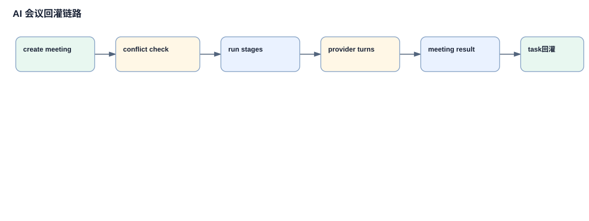

AI 会议请求阻塞与恢复链路
AI 会议不是普通聊天入口。执行 Agent 认为需要跨 Agent 对齐时，会创建 meeting request；这个 request 会阻塞源项目任务，直到用户确认、拒绝、恢复执行、重开会议或标记阻塞。
详细链路说明
prompt 中的行为合同
`_project_execution_build_prompt` 指示 Agent 必要时 POST meeting-requests，并明确不要自行 confirm/reject。输出是 Agent 可执行的协作约束。
`_handle_meeting_request_create`
输入 requester、goal、expectedOutcome、participants、urgency；动作是创建 pending request 和 taskBlocker。
`_project_execution_block_for_meeting_request`
取消 active attempt，写 `task.meetingBlocker`，状态转为 awaiting_meeting_resolution，项目执行停止推进。
`_handle_meeting_request_confirm`
用户确认后，选择上下文并转换为 executable meeting，request 记录 confirmed/conversion.meetingId。
`_handle_meeting_request_reject`
拒绝 request 会让 meetingBlocker 标记 awaitingUserDecision，任务不会自动继续。
前端展示 blocker
`renderProjectExecutionBlockedReason` 读取 task.meetingBlocker，展示 View、Continue、Mark blocked、Reopen 等动作。
`projectExecutionMeetingBlockerAction`
前端把用户选择 POST 到 `/project-execution/meeting-blocker`，输入 action 和 feedback。
`_handle_project_execution_meeting_blocker_action`
continue_execution 清除 blocker 并重新 `_handle_project_execution_start`；mark_blocked 写 blocked；reopen_meeting 回到 backlog/待处理。
阻塞恢复图

会议申请先变成 pending request，再影响 project execution 状态；未确认申请不会直接开会。
关键代码摘录
会议申请阻塞任务
task["meetingBlocker"] = {
"requestId": request.get("id"),
"status": "pending",
"awaitingUserDecision": False,
}
project["workflowPhase"] = "awaiting_meeting_resolution"meeting request 会停止当前 attempt，并让任务进入等待会议解决状态。
会议阻塞恢复入口
if action == "mark_blocked":
...
if action == "reopen_meeting":
...
start_result = _handle_project_execution_start(project_id, task_id, {...})用户可以标记阻塞、回到会议流程，或清除 blocker 后继续执行。
分支、失败路径和数据变化
| 类型 | 说明 |
|---|---|
| 分支 | 已有 unresolved request 幂等返回、按 urgency 自动确认、confirm、reject、continue_execution、mark_blocked、reopen_meeting、restart start_failed。 |
| 失败路径 | invalid action 返回 400；任务不在 awaiting_meeting_resolution 返回 409；无 unresolved blocker 返回 409；确认已拒绝 request 返回 409。 |
| 数据流 | agent meeting payload -> meeting request store -> task.meetingBlocker -> executable meeting conversion/rejection -> blocker UI -> blocker resolution -> new attempt/backlog/blocked。 |
关键概念补充
1. meetingBlocker
出现位置：`app/project_store.py`、`app/server.py`。它记录任务因会议请求而暂停的状态、requestId、决策和恢复信息。
2. awaiting_meeting_resolution
出现位置：project workflowPhase/task state。它表示执行链路停在会议解决点，不能当成普通 blocked。